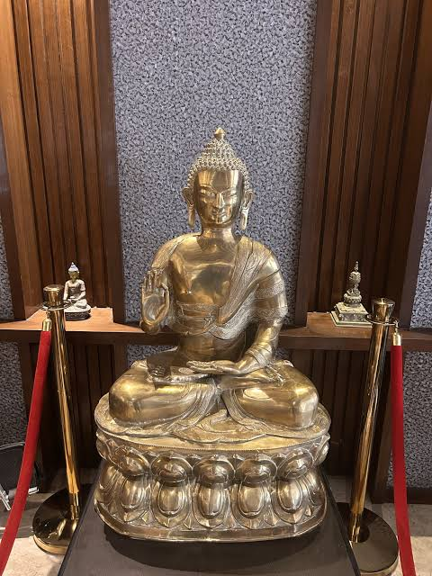
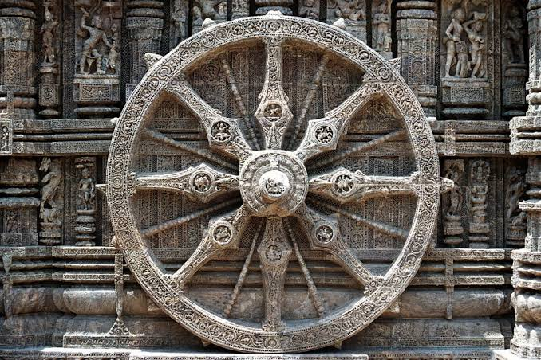
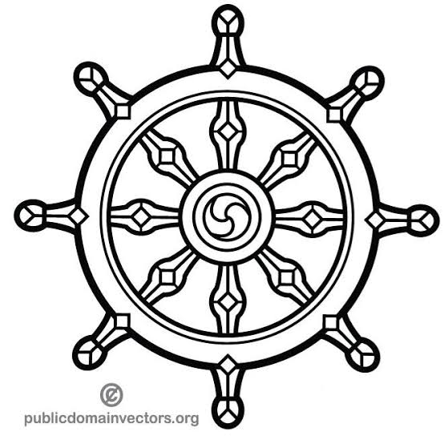
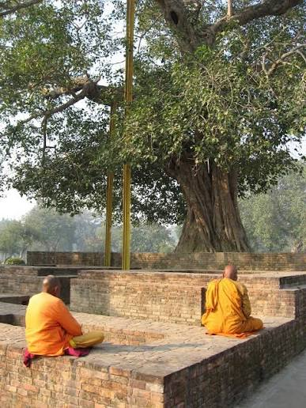

Budismo é uma doutrina filosófica e espiritual, surgida na Índia, nos séc. VI a.C. e tem como preceito a busca pelo fim do sofrimento humano e assim, alcançar a iluminação. Seus princípios baseiam-se nos ensinamentos de Siddhārtha Gautama, conhecido como Buda, que significa "Desperto" ou "Iluminado" .
Os budistas, portanto, não adoram um deus ou deuses, nem possuem uma rígida hierarquia religiosa, sendo muito mais uma busca individual, quando comparadas às religiões monoteístas ocidentais.
O budismo nasceu quando Siddhārtha Gautama decide compartilhar com outras pessoas seu caminho para alcançar o fim do sofrimento.
Sua doutrina se mistura às crenças do hinduísmo, tornando uma filosofia que se adaptava facilmente a cada região onde se instalava, bem como a cada ser humano que desejasse aprendê-la.
Nos 45 anos que pregou sua doutrina, por todas as regiões da Índia, o Buda mencionou sempre as "Quatro Verdades" e as "Oito Trilhas".
Além disso, resumiu o seu pensamento na Regra de Ouro:
"Tudo o que somos é resultado do que pensamos".
Somente séculos depois da sua morte foi realizada uma reunião que definiu os preceitos budistas, onde prevaleceram duas grandes escolas: Theravada e Mahayana.

O símbolo budista mais universal e facilmente reconhecido é a imagem do Buda sentado na posição de meditação. A imagem representa o potencial para o despertar, aspirações e ideias dos budistas.
Para muitos budistas ela também transmite a profunda paz interior e contentamento que encontram no budismo. Mesmo para quem não é budista a imagem ao longo dos tempos tem sido associada à calma e à paz.
Geralmente o Buda é a peça central de um altar budista.

O Buda pode ser representado com diferentes gestos, cada um deles com um significado. Além da postura de meditação, que é a mais conhecida, também é frequente o Buda ser representado em pé e deitado.
Todos os detalhes estão carregados de simbolismo e representam algum ensinamento e/ou qualidades cultivadas na prática budista. Por exemplo o Buda tinha a cabeça raspada assim como todos os outros monges e monjas, mas ele é representado com cabelo encaracolado simbolizando segundo algumas tradições a interdependência com tudo o que existe.
O ponto entre os olhos representa o terceiro olho e simboliza o despertar do Buda, a sabedoria.
O Buda foi um príncipe e por isso conforme era tradicional dessa época, quando vivia no palácio usava pesados brincos, o que fez alongar as suas orelhas, assim as orelhas longas mostram a sua origem, além disso também simbolizam uma das virtudes da compaixão, ser capaz de ouvir os lamentos do mundo.
Existem vários elementos simbólicos numa estátua.
A imagens do Buda surgiu pela primeira vez durante o período de Gandhara, fruto das interações entre budistas e gregos. Além da imagem do Buda histórico, também são representados outros Budas, como Amitabha e Maitreya, e também Bodhisattvas, como Kṣitigarbha, Avalokiteśvara, Samantabhadra, Mañjuśrī, etc.
A Roda do Dharma, ou Dharmachakra, é um dos símbolos mais antigos e importantes do budismo e, a seguir à imagem de Buda é provavelmente o mais conhecido.

Na maioria dos casos a Roda do Dharma é feita com 8 raios ou hastes e 3 redemoinhos no centro, mas também existem representações com 12, 24 e até 31 raios.
Os 8 raios da roda simbolizam o Nobre Caminho Óctuplo (que é um ensinamento central). Quando é representada com 12 raios está simbolizado os 12 Elos da Origem Dependente. Quando é representada com 24 é simbolizado os 12 Elos da Origem Dependente e a sua inversão. A roda de 24 raios também é chamada de Ashoka Chakra. E quando a roda tem 31 raios é simbolizado os 31 planos de existência da cosmologia budista.

Os 3 redemoinhos representam as 3 Jóias (Buda, Dharma e Sangha) ou os 3 Treinos (sila, samadhi e pañña).
O movimento cíclico de uma roda também é usado para simbolizar a natureza cíclica da existência. E o círculo representa a perfeição do Dharma.
Pequenas variações nos significados podem existir entre as escolas budistas.
Diz-se que o Buda colocou a “Roda do Dharma” em movimento quando deu o seu primeiro ensinamento descrito no Dhammacakkappavattana Sutta.
Entre os mais antigos exemplos existentes de uma Roda do Dharma estão os pilares erguidos por Ashoka (304-232 aC), um imperador que governou muito do que hoje é a Índia.
Ashoka foi um grande patrono do budismo e encorajou muito a sua disseminação, embora nunca o tenha imposto aos seus súbditos. Muitos dos grandes pilares que Ashoka ergueu no seu reino ainda hoje estão de pé.
Os pilares contêm éditos, sendo que alguns dos quais encorajam as pessoas a praticar a ética budista e a não-violência. Eles são decorados com Rodas do Dharma de 24 raios e no topo têm pelo menos um leão, representando o governo de Ashoka.
Hoje em dia a Roda do Dharma representa o budismo, da mesma forma que a cruz representa o cristianismo e a estrela de Davi representa o Judaísmo. No Budismo Vajrayana é considerado um dos 8 símbolos auspiciosos e também um dos símbolos sul-asiáticos mais antigos.
Desde os tempos do Buda que monges rapam a cabeça. Monges budistas não raspam as suas cabeças como uma declaração de moda, eles o fazem como um símbolo e um lembrete de renúncia aos desejos sedentos e apegos mundanos.
Siddhartha Gautama quando era um príncipe tinha longos cabelos, isso era um símbolo da sua posição social. Quando ele corta os cabelos renuncia à sua condição de príncipe, ele deixa de pertencer a qualquer casta.
Monges e monjas vestem a mesma roupa e rapam a cabeça, de forma que a partir desse momento são todos iguais na possibilidade de alcançar a iluminação e, portanto, iguais na Ordem, sem qualquer distinção.
O manto budista tem um significado semelhante à cabeça raspada e também é usado desde os tempos de Buda.
A Árvore Bodhi (Bodhirukka) ou “Árvore do Despertar” foi uma grande figueira (ficus religiosa) sob a qual Siddhartha Gautama alcançou o despertar.
A atual Árvore Bodhi é uma descendente da antiga árvore e fica localizada em Bodhgaya, na Índia. Junto à árvore fica o Templo Mahabodhi e o bodhimanda (lugar do despertar), que é o local onde Siddhartha sentou-se em meditação até atingir o despertar e se tornar num Buda.
Ramos e mudas desta árvore foram enviadas para outros templos e regiões.

Outro símbolo reconhecível do budismo é a famosa flor de lótus, ou Padua. A flor de lótus cresce em lagoas e para florescer atravessa a água lamacenta até finalmente atingir a superfície. Mesmo que o lótus tenha as suas raízes nas águas mais turvas, produz a mais bela flor.
Nas escrituras budistas o Buda se compara a um lótus. Assim como a flor de lótus brota da água lamacenta sem ficar com qualquer nódoa, o Buda se eleva neste mundo livre de impurezas.
O lótus aparece frequentemente na arte e escrituras budistas e, o Buda é frequentemente retratado sentado em cima de uma grande flor de lótus. Segundo a lenda quando o Buda nasceu, dos seus passos na terra cresceram flores de lótus.
No Tibete diz-se que Padmasambhava, considerado como um segundo Buda, nasceu do lótus. No Budismo Vajrayana é considerado um dos 8 símbolos suspiciosos.
O Buda não é para os seguidores da doutrina um ente particular, mas um título dado a um mestre budista ou a todos os que alcançaram a realização espiritual do budismo. Assim, Buda, em hindu, quer dizer "o Iluminado" ou "o desperto".
O primeiro Buda foi Siddhartha Gautama, um príncipe da dinastia Sakia, na Índia, que deixou tudo para dedicar-se à vida espiritual.
Nascido em 563 a.C. sua vida é resumida pelos seus seguidores em nascimento, maturidade, renúncia, busca, despertar e libertação, o ensino e a morte.
Durante os três séculos que se seguiram depois da morte de Gautama, o budismo propagou-se pela Índia Antiga. Ele acabou tendo mais adeptos que o próprio hinduísmo, a religião tradicional do país.
Mas, após se alastrar pela Ásia toda, desapareceu do país de origem, cedendo lugar ao hinduísmo. No decorrer da expansão, levado pela rota comercial da seda, atravessou todo o Oriente.
A doutrina original diferenciou-se, tornou-se menos rigorosa, adaptou-se às necessidades espirituais da gente simples. Essa forma de budismo denominou-se mahayana, ou "veículo maior".
No Tibete, a doutrina fundiu-se com a antiga religião bon-po, derivando-se depois para o lamaísmo.
Na Birmânia, Tailândia, Laos, Cambodja, Ceilão e Vietnã, o budismo permaneceu ortodoxo, sendo chamado hinayana, ou o "veículo menor".
Gradualmente, peregrinos chineses e monges budistas hindus começaram a cruzar as montanhas, como missionários.
Um dos peregrinos, Hsuan-Tsang (ou Xuanzang), deixou a China em 629, atravessando o deserto de Gobi e chegou à Índia.
Ali, durante 16 anos, recolheu dados sobre o budismo e escreveu, segundo a tradição, mais de mil volumes.
Imperava na China a dinastia Tsang e milhares de pessoas se converteram ao budismo.
Entre as outras religiões, o confucionismo, o taoismo, o zoroastrismo, o budismo era a que apresentava conceitos mais profundos e com o tempo ramificou-se em muitas seitas.
Por volta do século VII, o budismo chegou à Coreia e ao Japão, que após a conversão do príncipe Shotoku Taishi, foi feito religião nacional.
No século seguinte, o budismo chegou ao Tibete, mas já bastante mudado. Foi introduzido por Padma Sambhava, monge budista hindu.
A religião oficial já estava em franca decadência. Ela se fundiu facilmente com os novos conceitos e surgiu o lamaísmo. Esse transformou o Tibete em Estado teocrático, governado pelos Dalai e Panchen Lamas - monges lamaístas considerados reencarnação de santidades.
O budismo entrou na Europa em 1819, onde o alemão Arthur Schopenhauer desenvolveu novos conceitos, muito próximos do budismo.
Em 1875 foi fundada a Sociedade Teosófica, que encorajou as pesquisas sobre as religiões asiáticas.
O budismo se expandiu pelo mundo e existem templos budistas em diversos países da Europa, das Américas e na Austrália. Líderes budistas levam pelo mundo seus conceitos e vida, adaptando-se a cada sociedade.